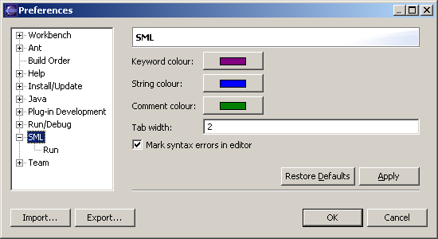
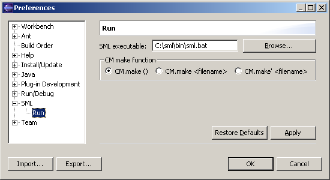

The plug-in's preferences can be changed from the Preferences window (Window > Preferences). Select SML from the left panel to show the preferences for SML.
| Keyword colour, String colour, Comment colour |
The colours used for syntax highlighting in the editor. Changes will only take effect on new windows; already open files have to be closed and reopened. Note: The colours used in the Console when running a program can be changed from Run/Debug > Console in the Preferences window. |
|---|---|
| Tab width |
The displayed width of a tab character. |
| Mark syntax errors in editor |
Whether to add red underlines and error markers at syntax errors in the editor. |
Preferences under SML > Run:
| SML executable |
The location of the SML executable that will run your SML programs. |
|---|---|
| CM make function |
The command used to invoke CM. Different versions of SML/NJ have different commands, select the one which you use.
|